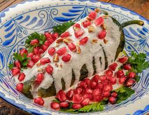

<section >
    <h3 align ="center">21.Puebla</h3>
    <center></center>
  
  <ul>
<li>Platillo: Chiles en nogada</li>
<li>Ingredientes: Chile poblano, picadillo (carne, frutas), nogada (crema y nuez), granada.</li>
</li>Historia: Creado por monjas agustinas en 1821 para recibir a Agustín de Iturbide y celebrar la Independencia.</li>
</li>Dato curioso: Representa los colores de la bandera de México: verde (chile), blanco (nogada) y rojo (granada).</li>
</section>


 <a href="proyecto.1.html">
  <button>Menu</button>
</a>